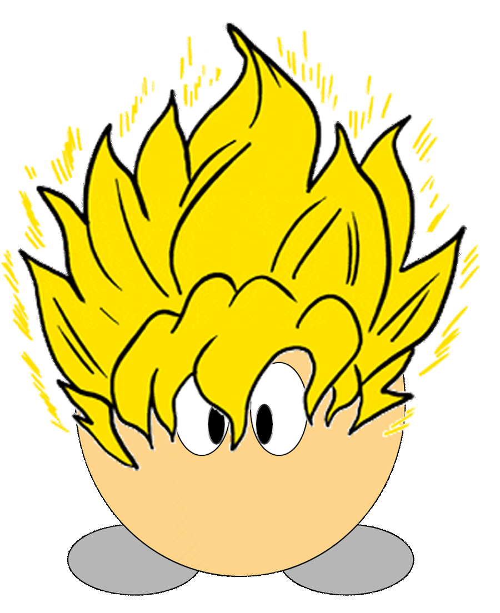

<ion-app>
    <ion-split-pane contentId="main-content">
        <ion-menu *ngIf="gv.getisLoggedIn()" contentId="main-content" type="overlay">
            <ion-content>
                <ion-list id="menu-list">
                    
                    <ng-template shoopydefault></ng-template>
                    <ion-list-header>Shoopy</ion-list-header>
                    <ion-note>{{gv.user.username}}</ion-note>
                    <ion-menu-toggle auto-hide="false" *ngFor="let p of appPages; let i = index">
                        <ion-item (click)="selectedIndex = i" routerDirection="root" [routerLink]="[p.url]" lines="none" detail="false" [class.selected]="selectedIndex == i">
                            <ion-icon slot="start" [ios]="p.icon + '-outline'" [md]="p.icon + '-sharp'"></ion-icon>
                            <ion-label>{{ p.title }}</ion-label>
                        </ion-item>
                    </ion-menu-toggle>
                </ion-list>
            </ion-content>
        </ion-menu>
        <ion-router-outlet id="main-content"></ion-router-outlet>
    </ion-split-pane>
</ion-app>